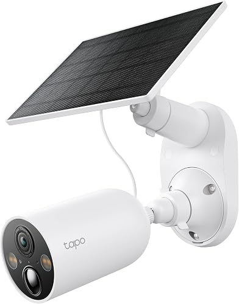
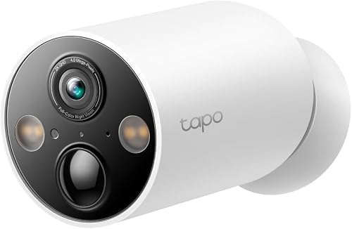
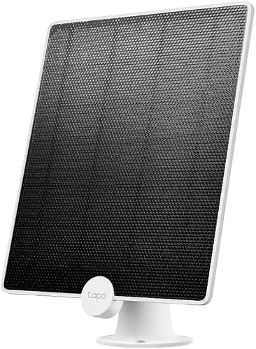
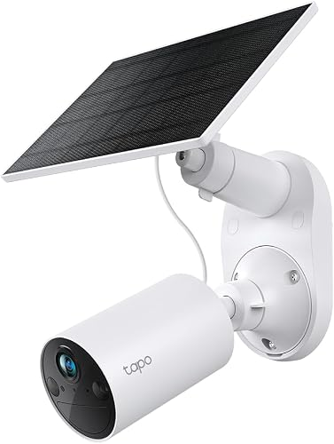
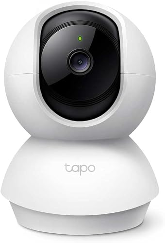

تقرير كاميرات المراقبة بالطاقة الشمسية للبيت
الأسعار من Amazon.eg ونون وجوميا يوم 31 أكتوبر 2026، وممكن تتغير.
الخلاصة
الترشيح: 3 كاميرات Tapo C425 من TP-Link. اتنين منهم Kit معاهم لوح شمسي للجنينة، والتالتة من غير لوح لباب الشقة.
- ليه C425؟ جودة 2K، ورؤية ليلية ملونة، وبطارية كبيرة. وسعر الـ Kit بتاعها بيزيد حوالي 100 جنيه بس عن الموديل الأضعف C410.
- ليه واي فاي مش 4G؟ الواي فاي واصل لكل الأماكن، فمش محتاجين شريحة ولا باقة نت شهرية.
- منين؟ الـ Kit من Amazon.eg بـ 5,398 جنيه، والكاميرا لوحدها من نون بـ 4,999 جنيه.
المنتجات المرشحة

للجنينة × 2Tapo C425 Kit (كاميرا + لوح شمسي)
جودتها 2K 4MP، ومعاها رؤية ليلية ملونة، ومقاومة IP66. بتشحن من الشمس باستمرار.
صفحة المنتج على Amazon.eg
لباب الشقة × 1Tapo C425 لوحدها
نفس كاميرا الجنينة بس من غير اللوح، وبتتشحن بكابل USB-C كل شهرين لـ 4 شهور. سعرها في أمازون 5,126 جنيه.
صفحة المنتج على نون
اختياريلوح شمسي Tapo A200
قوته 4.5 وات، ومقاومته IP65، ومعاه كابل 4 متر. اللوح ده أصلاً جوه علبة الـ Kit، فمش محتاجين نشتريه لوحده غير لو قررنا نحط لوح لكاميرا الباب بعدين.
نون
بديل أرخصTapo C410 Kit
جودتها وبطاريتها أقل من الـ C425، والفرق في السعر مش مستاهل (حوالي 100 جنيه بس)، فمش منصوح بيها.
صفحة المنتج على Amazon.eg
بديل للباب لو عدّينا سلكTapo C200
بتلف 360 درجة وبتسجل 24 ساعة، بس محتاجة كهربا مستمرة، يعني لازم نعدي سلك USB من جوه الشقة.
صفحة المنتج على Amazon.egالتشكيلة النهائية والتكلفة
| القطعة | العدد | منين | سعر القطعة (جنيه) | الإجمالي (جنيه) |
|---|---|---|---|---|
| Tapo C425 Kit (كاميرا + لوح) للجنينة | 2 | Amazon.eg | 5,398 | 10,796 |
| Tapo C425 لوحدها للباب | 1 | نون | 4,999 | 4,999 |
| كارت SanDisk مقاس 64 جيجا | 3 | Amazon.eg | 1,175 | 3,525 |
| الإجمالي | 19,320 |
- ليه 64 جيجا مش 128؟ الكاميرات دي بتسجل مقاطع قصيرة لما يحصل حركة بس، مش تسجيل متواصل، فالـ 64 جيجا كفاية جداً.
- لو عايز تشتري من مكان واحد: خد التلاتة C425 Kit من أمازون بـ 16,194 جنيه، يعني أغلى بحوالي 400 جنيه بس، ويفضل معاك لوح شمسي زيادة. بس خلي بالك إن المعروض كان قطعتين بس.
- خصم إضافي: أمازون عامل خصم 20% لكروت NBE Visa Signature.
مقارنة الأسعار
أرخص سعر لـ C425 Kit كان في أمازون، وأرخص سعر للكاميرا لوحدها كان في نون. الأسعار بالجنيه المصري.
| المنتج | Amazon.eg | نون | جوميا |
|---|---|---|---|
| C425 Kit (كاميرا + لوح) | 5,398 (فاضل منه 2 بس) | 9,349 | مش موجود |
| C425 لوحدها | 5,126 | 4,999 | مش موجود |
| لوح شمسي A200 لوحده | حوالي 890 (ماركة تانية متوافقة) | 1,025 | مش موجود |
| C410 Kit | 5,299 | مش موجود | 4,620 (من غير لوح) |
| جرس الباب D230S1 | مش متشاف | مش متشاف | 5,220 |
| C200 (محتاجة فيشة) | 1,090 | مش متشاف | 1,262 |
| كارت SanDisk مقاس 64 جيجا | 1,175 | مش متشاف | مش متشاف |
| كارت SanDisk مقاس 128 جيجا | 1,890 – 2,273 | مش متشاف | مش متشاف |
الـ C410 Kit أرخص بـ 100 جنيه بس من الـ C425 Kit، مع إن جودته أقل وبطاريته أصغر. علشان كده الـ C425 هي الاختيار الأحسن.
احتياجات البيت
محتاجين 3 كاميرات واي فاي ببطارية: اتنين معاهم لوح شمسي، وواحدة من غير لوح.
| المكان | العدد | الظروف | الحل |
|---|---|---|---|
| الجنينة | 2 | فيها شمس وواي فاي | C425 Kit بلوح شمسي، وغالباً مش هتحتاج شحن خالص |
| قدام باب الشقة | 1 | مفيش شمس ولا فيشة كهربا، فيه إضاءة عادية وواي فاي | C425 من غير لوح، تتشحن بكابل USB-C كل شهرين لـ 4 شهور تقريباً |
توحيد الموديل في التلات أماكن معناه تطبيق واحد (Tapo)، وشاحن واحد، وطريقة ضبط واحدة.
بدائل للباب:
- جرس بكاميرا Tapo D230S1: بيشتغل ببطارية، لو عايز تشوف مين بيرن وتكلمه من الموبايل. سعره في جوميا 5,220 جنيه.
- سلك USB رفيع من جوه الشقة + Tapo C200 أو C210: تسجل 24 ساعة من غير شحن. الـ C200 سعرها في أمازون 1,090 جنيه.
أنواع الكاميرات اللي بتشتغل بالطاقة الشمسية
فيه 3 أنواع. ولأن البيت فيه واي فاي، النوع التاني هو اللي يناسبنا.
| النوع | يناسب مين | ملاحظات |
|---|---|---|
| كاميرا 4G بشريحة + لوح شمسي | أرض أو مزرعة أو موقع شغل، من غير كهربا ولا واي فاي | محتاجة باقة نت شهرية، وبتسجل لما تحس بحركة بس |
| كاميرا واي فاي ببطارية + لوح شمسي (اختيارنا) | بيت أو فيلا الواي فاي واصل لمكان الكاميرا فيها | مفيهاش مصاريف شهرية، وبتسجل لما تحس بحركة |
| منظومة كاملة (ألواح + بطارية + كنترولر + جهاز تسجيل NVR) | أكتر من كاميرا محتاجين يسجلوا 24 ساعة | من 25,000 جنيه لفوق تقريباً، ومحتاجة فني يركبها |
المواصفات المهمة
أهم حاجة في كاميرا البطارية حساس الحركة PIR، لأنه هو اللي بيوفر البطارية. الجدول ده فيه المطلوب واللي بتقدمه C425:
| المواصفة | المطلوب | Tapo C425 |
|---|---|---|
| الجودة | 2K / 4MP، أو 1080p لو الميزانية محدودة | 2K QHD 4MP |
| الاتصال | واي فاي (بيشتغل على 2.4GHz) أو 4G بشريحة | واي فاي |
| حساس الحركة | PIR، ويفرق بين إنسان وحيوان وعربية | موجود |
| البطارية | 10,000 لـ 20,000 mAh | حوالي 10,000 mAh |
| اللوح الشمسي | من 3 لـ 10 وات للكاميرا | 4.5 وات (A200)، ومعاه كابل 4 متر |
| الرؤية الليلية | أشعة تحت حمراء، أو ملونة بكشاف | ملونة |
| مقاومة الجو | IP65 أو IP66، وتستحمل حرارة لحد 60 درجة تقريباً | IP66 |
| التخزين | كارت ميموري أو سحابي (cloud) | كارت لحد 512 جيجا، أو سحابي |
| زاوية الرؤية | واسعة | 150 درجة |
| حاجات إضافية | صوت في الاتجاهين، وإنذار | الاتنين موجودين |
نصايح الشراء والتركيب
قبل الشراء
- اختبر الواي فاي في مكان كل كاميرا بالظبط: افتح فيديو على الموبايل وانت واقف هناك. الكاميرات دي بتشتغل على 2.4GHz بس، ولو الإشارة ضعيفة هتحتاج مقوي (Extender).
- اتأكد إن الحامل (Mount) جوه العلبة، وإن سلك اللوح الشمسي طويل كفاية يوصل لمكان الشمس. سلك الـ A200 طوله 4 متر.
- اشتري من البايع الرسمي أو اللي بيدي ضمان، وابعد عن صفحات فيسبوك اللي مفيهاش معاينة أو دفع عند الاستلام.
التركيب
- علّي الكاميرا حوالي 2.5 لـ 3 متر علشان محدش يطولها.
- وجّه اللوح الشمسي ناحية الجنوب، وميّله حوالي 30 درجة، في مكان مفيهوش ضل شجر.
- لو تقدر، خلي الكاميرا في الضل واللوح بس هو اللي في الشمس، علشان البطارية متسخنش في الصيف.
- امسح التراب من على اللوح كل كام أسبوع، لأن التراب بيقلل الشحن جامد.
- قدام الباب: وجّه الكاميرا على بابك والسلم، مش على باب الجيران.
الضبط وإطالة عمر البطارية
- غيّر الباسورد الافتراضي أول ما تركب، وضيف التلات كاميرات على حساب واحد في تطبيق Tapo.
- حدد منطقة الحركة (Activity Zone)، وخلي الإشعارات والتسجيل للأشخاص بس.
- قلل مدة الكليب لحوالي 15 – 20 ثانية.
- متفتحش البث المباشر كتير، لأنه أكتر حاجة بتسحب بطارية. ده مهم خصوصاً لكاميرا الباب اللي ملهاش لوح.
المصادر: Amazon.eg (C425) · Amazon.eg (A200) · Amazon.eg (كروت SanDisk) · نون · جوميا. صور المنتجات من صفحات المنتجات على Amazon.eg.